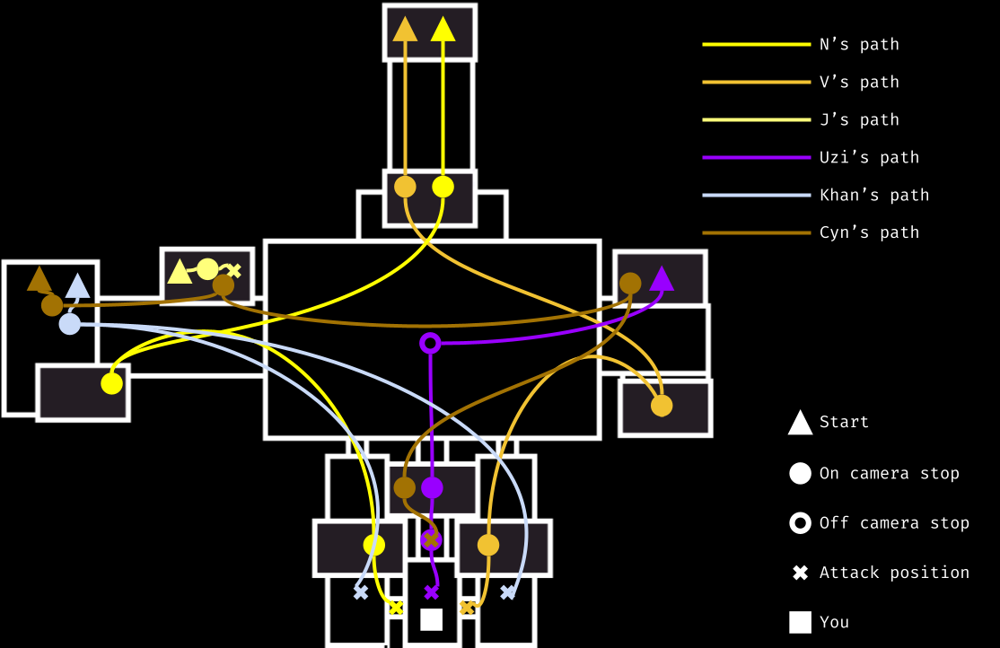

Save for doll, all of the game's enemies follow a set path toward you as you can see below. how quickly they move along these paths depends on the difficulty level they are set to.
0: They don't move at all. 1-5: They move slowly through the facility. 6-10: They move at a moderate pace. 11-15: They move quickly between stops. 16-20: At this point, they might as well be sprinting.
Below is a map of the movement patterns of all enemies aside from doll.

N and V function like Bonnie and Chica from FNAF 1. They work their way to your office room by room before waiting in your doorway for the perfect moment to strike. you can slam the doors on them with the A & D keys respectively to somehow make them leave. These two become active at 12AM.
Uzi like the little gremlin she is decides to crawl through ventilation shafts instead of using the perfectly good hallways like a normal person. She functions like the withered animatronics from FNAF 2. When she reaches her attack position she will lean over your desk and you will hear a loud static noise. At this point you will have a few seconds to put on the mask before she kills you. Doing so correctly will make her return to her room. Uzi becomes active at 1AM.
J functions like Foxy from FNAF 1. She starts in the janitorial closet and slowly stands up before sprinting to your office. This strategy makes sense for a character who may or may not have patience issues. If you ever check the janitorial closet camera and see that she isn't there, CLOSE THE LEFT DOOR IMMIDIETLY! If the door doesn't shut then it's already too late. J becomes active at 2AM.
Doll is the only character that doesn't have a movement "path" per say. Instead she will randomly appear in front of all of your cameras at once blocking your view. You can use the "reset camera" button to get her to piss off, but the more you do this the angrier she gets. eventually she will teleport into your office. When that happens you will have a split second to open your cameras before she attacks you. if you open the cameras in time she will be reset. Doll becomes active at 3AM.
Out of all of the characters Khan probably has the most determination to kick your ass. Bro literally just makes a B-line for your office as soon as he stands up. Since he built the doors you use to defend yourself he also has the ability to disable them meaning you can't close the doors while he's in your doorway. Fortunately he isn't as strong as the others and can be fended off using the electric shock, (that's the Z or X keys depending on the hallway). Khan Becomes active at 5AM.
For an eldritch demi-god I found it a little surprising that Cyn relies heavily on her teammates to have any sense of difficulty. Her gimmick is that she doesn't move if you're watching her through the cameras but if she gets to your office there's nothing you can do about it. As long as you are on the correct camera Cyn will not move even if you technically can't see her. Cyn becomes active at 606AM.